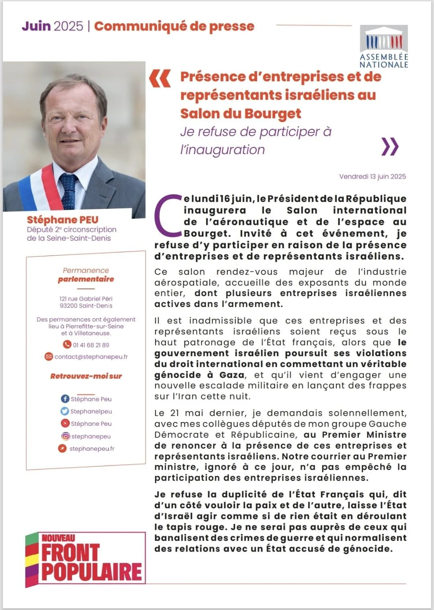

Communiqué relayé
Stéphane Peu interpelle sur la présence d’entreprises israéliennes au Salon du Bourget
Date indiquée par Facebook · 15 juin 2025
Repères éditoriaux
Nous avions relayé le communiqué de Stéphane Peu sur la présence d’entreprises israéliennes au Salon du Bourget. Le texte signé figure dans le document joint.
Texte conservé avec la publication
Communiqué de Stéphane PEU
Les députés communistes
Communiqué de Stéphane PEU
@[100044349613251:2048:Les députés communistes]

Sources
Archive rouge · export Facebook · AR-0002-FB-01091
À lire aussi · À Niort, le rassemblement du 25 octobre pour la paix en vidéo · Le lien d’origine